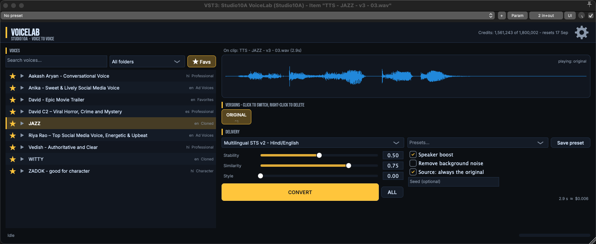
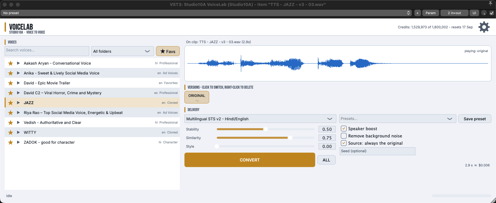
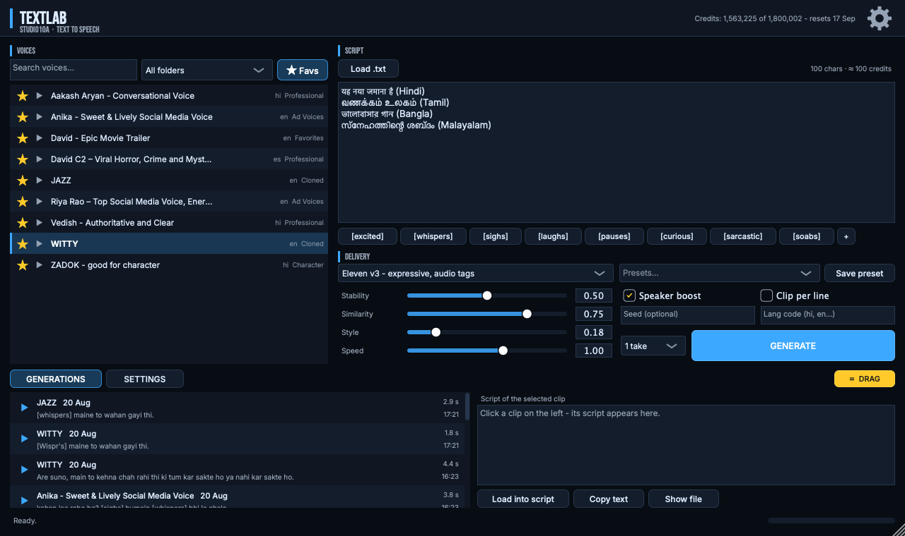
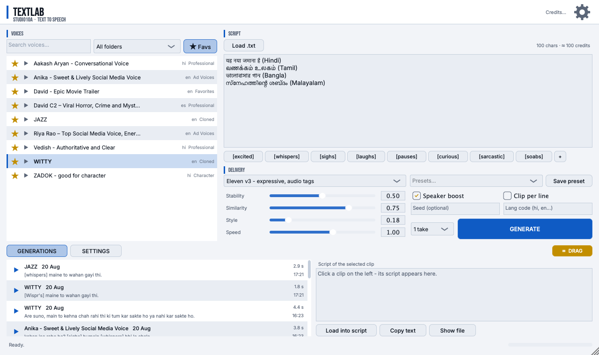
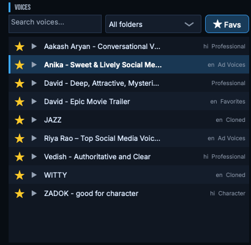
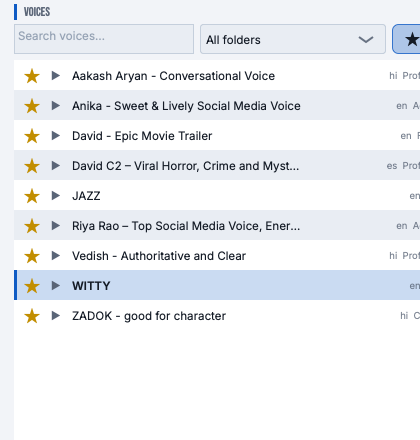
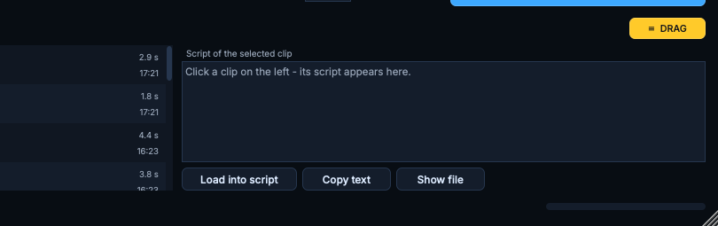
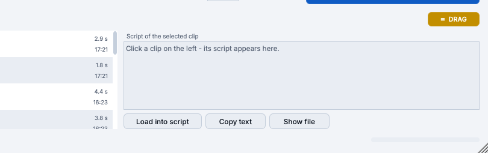

Two plugins that put ElevenLabs AI voices inside your DAW. VoiceLab changes the voice of anything already on your timeline. TextLab turns a typed script into speech - on the clip itself. No exports, no browser tabs, no copy-paste. The timeline is the interface.
VST3 + ARA2 | Studio One · Cubase · Nuendo · REAPER · any VST3 host | macOS · Windows
Download free

VoiceLab live in REAPER - the clip's waveform, VERSIONS row, and the gold CONVERT


TextLab - script on the right, your voice library on the left, every generation kept with its text
Put it on a clip, pick a voice, press Convert. The clip plays in the new voice - the original untouched, one click away. Every conversion becomes a VERSION chip: A/B instantly, keep them all in the project.
Type or paste a script - Hindi, Tamil, Bangla, English, 70+ languages. On a clip, the clip becomes the speech. On a track, generate and drag. Emotion tags, multiple takes per line, per-line batching.
Search, folders, favourites and free auditioning across every voice on your ElevenLabs account - synced in one click, shared by both plugins, with a live credit meter so cost is never a surprise.
Select many clips, convert them all with one press. One to three takes per generation with reproducible seeds. Twenty versions per clip, each addressable from the keyboard.
Editable shortcut for Convert and Generate. Ctrl+1-0 and Cmd+1-0 switch versions - the shortcut is printed on every chip. Drag any version, or the original, straight onto any track.
Dark and light skins, one settings brain across every instance, files named the way a producer would name them, a real manual and a real uninstaller. Nothing in the UI that is not needed.


The voice browser - folders, favourites, free preview on every row


Generations - click a clip, its script appears; drag any row to the timeline
The Voice Suite is free. We built it for our own studio, we use it every day, and we believe tools that spark creativity are meant to be shared - not kept behind a price tag. If it earns its place in your sessions, buy us a coffee on the download page. Entirely optional, same download either way.
Designed and produced by Saurabh Mehta · Studio10a Productions · Indore · Mumbai · Delhi